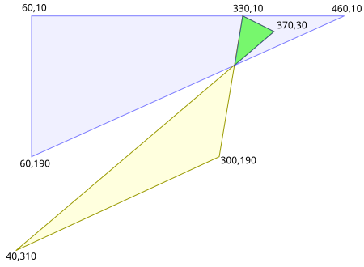
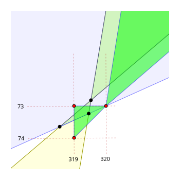
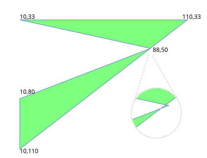

In computational geometry, polygon coordinates are always represented by discrete numbers, whether as integer or as float variables. And quite often these coordinate values differ from their real values. While geometric imprecision is usually more obvious when using integer coordinates, it still occurs when using float values. And if this imprecision isn't anticipated and handled properly, geometric computations won't be reliable (numerically robust). For example, some imprecision must be expected when calculating where line segments intersect.
Imprecision associated with float variables (whether single or double type) will vary considerably depending on how large the values are (with very large values having much greater imprecision than very small values). But imprecision with integers will always be constant (±1 unit). And since it's much easier to differentiate significant from insignificant imprecision with integer coordinates, the Clipper library uses these internally for all geometric calculations. The Clipper library is numerically robust because it expects and carefully manages imprecision when calculating where segments intersect.
Caution: Since integer imprecision is ±1 unit, the library user should not expect clipping solutions to contain polygons with near zero areas. For example, a triangle in a solution with an edge that's < 2 units in length will be considered within a rounding adjustment of having zero area (despite the length of the other edges), and these triangles will be removed from solutions. When performing clipping operations, subject and clip paths should be scaled so that the effects of integer rounding in solutions become insignificant for the purposes of the library user.
In the unscaled image below, the area of intersection of two polygons has been highlighted in bright green.



Copyright © 2010-2024 Angus Johnson - Clipper2 1.5.2 - Help file built on 3 Mar 2025